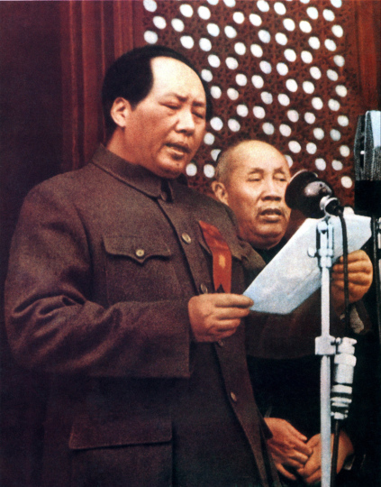

En dos décadas, un partido comunista derrotado y perseguido tras una masacre pasó a fundar un Estado de 540 millones de personas. En el camino sobrevivió a una invasión japonesa de ocho años, inventó una forma de guerra que no necesitaba ciudades para ganar, y fijó una regla que sigue intacta hoy: el fusil obedece al Partido, nunca al revés.
Toca cada acto para expandirlo.
Antes de 1927, China atravesaba una profunda fragmentación estatal bajo el dominio de los señores de la guerra y la injerencia de las potencias imperialistas occidentales y Japón. Para unificar el país y recuperar la soberanía nacional, el Partido Comunista de China (PCCh) y el Kuomintang (KMT) constituyeron en 1923 el Primer Frente Unido, respaldado por la Internacional Comunista, que movilizó a obreros y campesinos e impulsó la Expedición al Norte contra los caudillos del Norte.
Pero la estructura del Estado republicano era frágil y carecía de instituciones consolidadas. A medida que los movimientos obreros y campesinos ganaban fuerza, la cúpula derechista del KMT, encabezada por el generalísimo Chiang Kai-shek y aliada con la gran burguesía compradora y los terratenientes, ejecutó en abril de 1927 una sangrienta purga anticomunista en Shanghái y otras provincias. El colapso del Frente Unido destruyó la posibilidad de una república democrático-burguesa unificada e instauró la dictadura del régimen de Nanjing.
La ruptura de 1927 forzó al PCCh a abandonar el trabajo político urbano y asumir la lucha armada independiente contra el régimen del KMT. El Levantamiento de Nanchang (1 de agosto de 1927) y el Levantamiento de la Cosecha de Otoño liderado por Mao Zedong dieron nacimiento al Ejército Rojo de Obreros y Campesinos. A través de la Reorganización de Sanwan, el PCCh estableció filiales del Partido en cada compañía militar, fijando el principio del control político absoluto sobre las fuerzas armadas.
Japón invadió Manchuria en septiembre de 1931 mediante el Incidente del 18 de Septiembre, estableciendo el régimen títere de Manchukuo.
Chiang Kai-shek insistió en aniquilar al Ejército Rojo antes de defender el territorio nacional frente a Japón, desencadenando una profunda crisis de legitimidad.
Generales del propio KMT apresaron a Chiang Kai-shek y lo forzaron a cesar la guerra civil para formar el Segundo Frente Unido contra Japón.
Tras la invasión generalizada de Japón a partir del Incidente del Puente Marco Polo (julio de 1937), Mao Zedong formuló la teoría de la "Guerra Prolongada" y el cerco a las ciudades desde el campo. El Ejército Rojo se reorganizó en el Octavo Ejército de Ruta y el Nuevo Cuarto Ejército, desplegando guerra de guerrillas detrás de las líneas japonesas y construyendo zonas liberadas en el norte y centro de China.
En las bases regionales como Yan'an, el PCCh implementó el sistema de gobierno de "tres tercios" y formuló la doctrina de la "Nueva Democracia" (1940) y la "Línea de Masas". Entre 1942 y 1945, el Movimiento de Rectificación de Yan'an unificó a la militancia, consolidando el Pensamiento de Mao Zedong como guía ideológica oficial en el 7º Congreso Nacional del PCCh (1945).
Japón se rindió incondicionalmente en agosto de 1945, tras ocho años de resistencia — pero la guerra por el poder dentro de China apenas estaba entrando en su fase decisiva.
Tras el fracaso de las Negociaciones de Chongqing, estalló la Guerra de Liberación nacional en 1946. El PCCh movilizó masivamente al campesinado mediante la reforma agraria y la confiscación del capital burócrata. Entre septiembre de 1948 y enero de 1949, el Ejército Popular de Liberación ejecutó las Tres Grandes Campañas (Liaoxi-Shenyang, Huaihai y Beiping-Tianjin), destruyendo las fuerzas principales del KMT, que se replegó a la isla de Taiwán.
En junio de 1949, Mao teorizó la "Dictadura Democrática del Pueblo". En septiembre, la Conferencia Consultiva Política del Pueblo Chino aprobó el Programa Común como constitución provisional, y el 1 de octubre de 1949 se proclamó la República Popular China.

Legitimidad histórica del "rejuvenecimiento nacional". La narrativa de haber puesto fin al "Siglo de la Humillación" y expulsado al imperialismo en 1949 constituye la fuente primordial de legitimidad política del PCCh hasta el presente.
El Partido dirige al fusil. El principio nacido en la Reorganización de Sanwan en 1927 —que las fuerzas armadas obedecen al Partido y no al revés— sigue rigiendo sin excepción la relación entre el PCCh y el Ejército Popular de Liberación.
Conceptos centrales del liderazgo actual de Xi Jinping, como la "Democracia Popular en Todo el Proceso", son una reelaboración directa de la "Dictadura Democrática del Pueblo" y la "Nueva Democracia" formuladas por Mao durante este conflicto.
La regla fijada en 1927 — que el Partido controla al ejército, no al revés — es hoy un principio constitucional no negociable, sin excepciones ni ambigüedad.
Haber expulsado al imperialismo japonés y fundado un Estado unificado en 1949 sigue siendo la fuente primaria de legitimidad que el PCCh invoca frente a cualquier cuestionamiento.
Lo que hoy Xi Jinping llama "democracia popular en todo el proceso" tiene su origen directo en los conceptos de Nueva Democracia que el PCCh desarrolló combatiendo en Yan'an.
Contenido curado por el equipo de Club Kongzhi a partir de fuentes académicas reunidas en el cuaderno de NotebookLM dedicado a la Guerra Civil y la invasión japonesa.